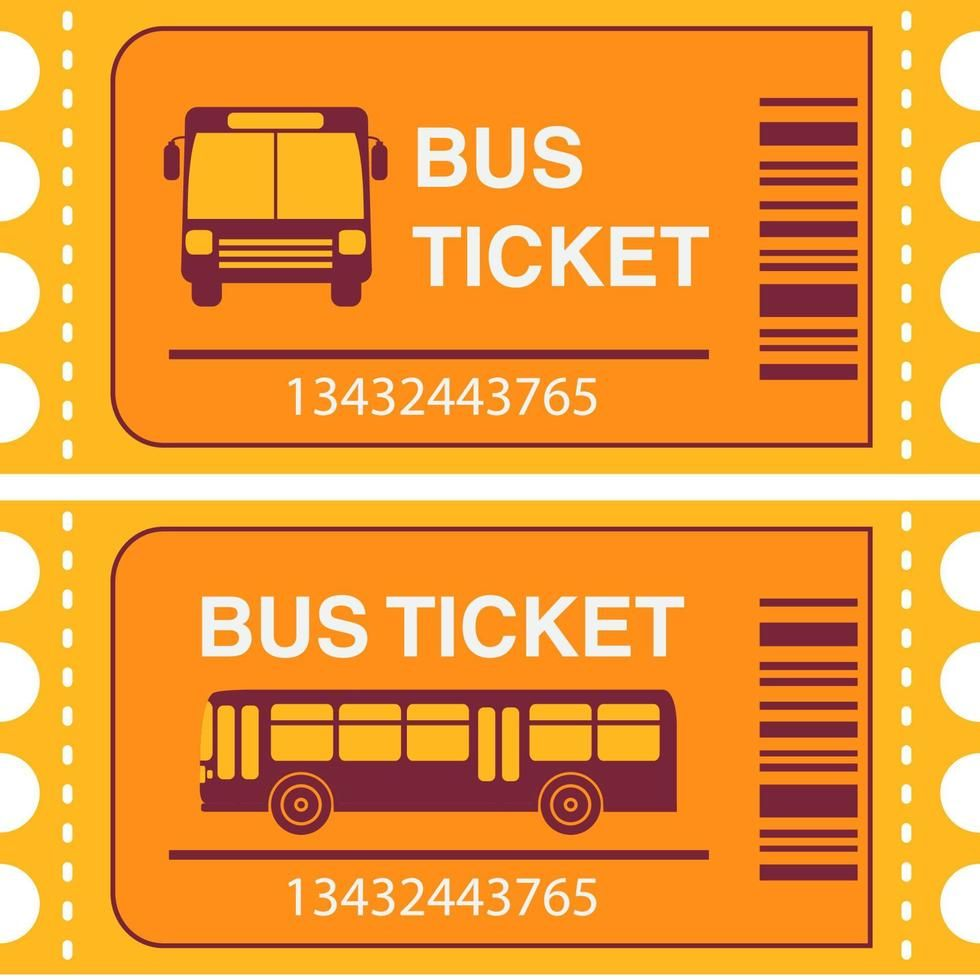
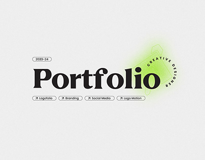
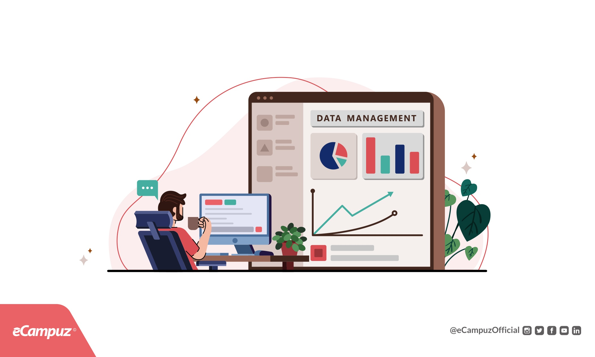
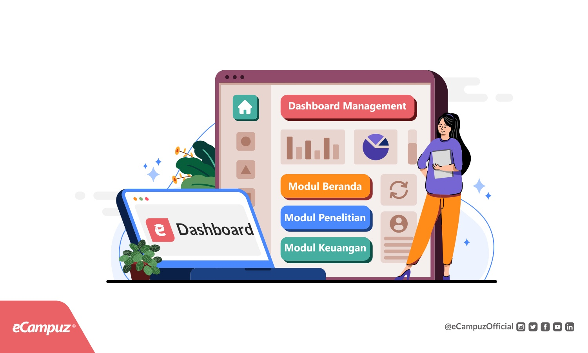

Sistem, website, dan solusi digital.
Kumpulan project yang merepresentasikan kemampuan saya dalam membangun website, aplikasi, sistem informasi, database, dan solusi digital.

Featured · Sistem InformasiSistem Pemesanan Tiket Bus
Sistem pemesanan tiket bus berbasis web yang memungkinkan pengguna melihat jadwal perjalanan, memilih perjalanan, mengisi data penumpang, dan melakukan proses pemesanan secara terstruktur.

Personal · Web DevelopmentPersonal Portfolio Website
Website personal branding untuk menampilkan profil, kemampuan, pengalaman, pendidikan, project, tulisan, dan informasi kontak secara profesional.

Internal · Information SystemSistem Informasi & Pengelolaan Data
Sistem berbasis web untuk mengelola data secara terstruktur, mulai dari input, pencarian, perubahan, penghapusan, hingga penyajian informasi.

Dashboard · DataDashboard Admin & Data Management
Dashboard administrator untuk menampilkan informasi dan membantu pengelolaan data melalui antarmuka yang sederhana, terstruktur, dan mudah digunakan.
 Business · Landing Page
Business · Landing Page
Business & Brand Landing Page
Website bisnis yang dirancang untuk memperkuat identitas brand, menampilkan layanan, membangun kepercayaan, dan mengarahkan pengunjung menuju kontak.
IT Support & System Maintenance
Kumpulan pekerjaan dan solusi teknis yang berkaitan dengan troubleshooting, konfigurasi perangkat, software, maintenance sistem, pengelolaan data, dan kebutuhan teknis pengguna.
Tools yang saya gunakan.
Bukan sekadar membuat website.
Setiap project adalah kesempatan untuk memahami masalah, menyusun struktur, mengolah data, membangun sistem, dan menghasilkan solusi yang benar-benar dapat digunakan.
Mulai dari tampilan frontend hingga backend, database, dan kebutuhan sistem, saya berusaha melihat sebuah project sebagai satu kesatuan.